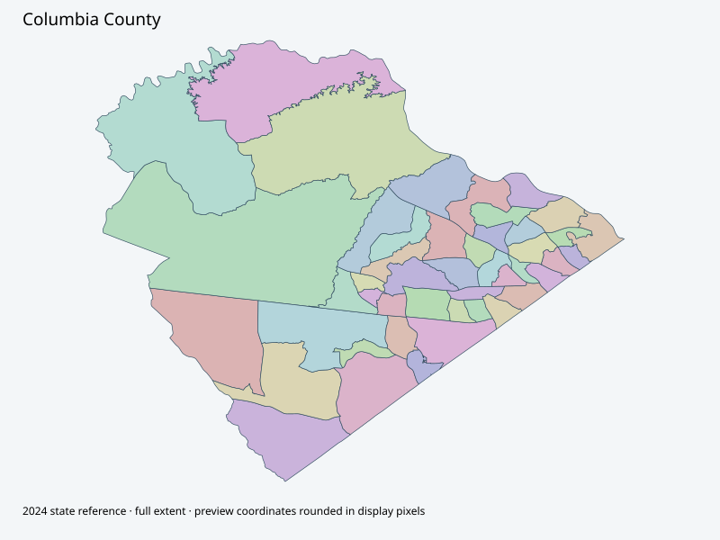

Map index · 46 explicit-FIPS 2024 map rows; 46 historical result identities. No approved crosswalk.

Full native coordinate/attribute extraction (gzip JSON) · Original complete statewide ZIP
Actual January2026 notices and maps cover proposed dissolution024 and100/108 and changed adjacent boundaries. Notices say may become final February24; maps retain Option1/Option2 and proposed labels. These are partial proposed geography, not a complete adopted precinct map; state2024 is complete reference fallback.
Full objects, county source IDs/clocks and attributes: all 2,701 native contexts. isVirtual:false and source label precinct do not prove physical geometry.
| Source name | Full source GUID | Breakdown ordinal | Source | Map status |
|---|---|---|---|---|
| Kiokee Bapt Church | 01000000-d884-2e72-b2e4-08dcda4b942a | 0 | 2024NovGen--columbia-county-ga | unreviewed / no approved map join |
| Macedonia Church of Grovetown | 01000000-d884-2e72-8104-08dcda4b942f | 1 | 2024NovGen--columbia-county-ga | unreviewed / no approved map join |
| Stevens Creek Church-Grovetown | 01000000-d884-2e72-7cd9-08dcda4b9434 | 2 | 2024NovGen--columbia-county-ga | unreviewed / no approved map join |
| Lewis Methodist | 01000000-d884-2e72-88dc-08dcda4b9439 | 3 | 2024NovGen--columbia-county-ga | unreviewed / no approved map join |
| Woodlawn Bapt Church | 01000000-d884-2e72-4bd1-08dcda4b943e | 4 | 2024NovGen--columbia-county-ga | unreviewed / no approved map join |
| Patriots Park | 01000000-d884-2e72-32ec-08dcda4b9443 | 5 | 2024NovGen--columbia-county-ga | unreviewed / no approved map join |
| New Life Church | 01000000-d884-2e72-6421-08dcda4b9449 | 6 | 2024NovGen--columbia-county-ga | unreviewed / no approved map join |
| Columbia Co. Health Dept. | 01000000-d884-2e72-5853-08dcda4b944e | 7 | 2024NovGen--columbia-county-ga | unreviewed / no approved map join |
| Harlem Branch Library | 01000000-d884-2e72-fe25-08dcda4b9452 | 8 | 2024NovGen--columbia-county-ga | unreviewed / no approved map join |
| Harlem Senior Center | 01000000-d884-2e72-9f94-08dcda4b9457 | 9 | 2024NovGen--columbia-county-ga | unreviewed / no approved map join |
| Second Mount Moriah Baptist Church | 01000000-d884-2e72-4380-08dcda4b945c | 10 | 2024NovGen--columbia-county-ga | unreviewed / no approved map join |
| Former Euchee Creek Library | 01000000-d884-2e72-96ab-08dcda4b9462 | 11 | 2024NovGen--columbia-county-ga | unreviewed / no approved map join |
| Liberty Park-Grovetown | 01000000-d884-2e72-edad-08dcda4b9468 | 12 | 2024NovGen--columbia-county-ga | unreviewed / no approved map join |
| Grovetown Methodist | 01000000-d884-2e72-d5f8-08dcda4b946d | 13 | 2024NovGen--columbia-county-ga | unreviewed / no approved map join |
| G A Apostolic Church | 01000000-d884-2e72-b5c6-08dcda4b9472 | 14 | 2024NovGen--columbia-county-ga | unreviewed / no approved map join |
| Grovetown Dept of Public Safety Station #2 | 01000000-d884-2e72-8bc2-08dcda4b9477 | 15 | 2024NovGen--columbia-county-ga | unreviewed / no approved map join |
| Grovetown Branch Library | 01000000-d884-2e72-d2e7-08dcda4b947c | 16 | 2024NovGen--columbia-county-ga | unreviewed / no approved map join |
| Eubank/Blanchard Ctr | 01000000-d884-2e72-b6c1-08dcda4b9481 | 17 | 2024NovGen--columbia-county-ga | unreviewed / no approved map join |
| Second Mt. Carmel Baptist Church | 01000000-d884-2e72-87f0-08dcda4b9486 | 18 | 2024NovGen--columbia-county-ga | unreviewed / no approved map join |
| Damascus Bapt Church | 01000000-d884-2e72-6ee1-08dcda4b948b | 19 | 2024NovGen--columbia-county-ga | unreviewed / no approved map join |
| Col Cty Board of Edu | 01000000-d884-2e72-6590-08dcda4b9490 | 20 | 2024NovGen--columbia-county-ga | unreviewed / no approved map join |
| Parkway Baptist Church | 01000000-d884-2e72-2776-08dcda4b9495 | 21 | 2024NovGen--columbia-county-ga | unreviewed / no approved map join |
| Grace Baptist Church | 01000000-d884-2e72-88b3-08dcda4b949a | 22 | 2024NovGen--columbia-county-ga | unreviewed / no approved map join |
| Christ Sanctified | 01000000-d884-2e72-65c4-08dcda4b949f | 23 | 2024NovGen--columbia-county-ga | unreviewed / no approved map join |
| Parkway Elementary | 01000000-d884-2e72-263e-08dcda4b94a4 | 24 | 2024NovGen--columbia-county-ga | unreviewed / no approved map join |
| Blanchard Park | 01000000-d884-2e72-ceac-08dcda4b94a8 | 25 | 2024NovGen--columbia-county-ga | unreviewed / no approved map join |
| Belair Baptist Church | 01000000-d884-2e72-d5cf-08dcda4b94b0 | 26 | 2024NovGen--columbia-county-ga | unreviewed / no approved map join |
| Westminster Presb Church | 01000000-d884-2e72-e2eb-08dcda4b94b5 | 27 | 2024NovGen--columbia-county-ga | unreviewed / no approved map join |
| Trinity Bapt Church | 01000000-d884-2e72-ca39-08dcda4b94ba | 28 | 2024NovGen--columbia-county-ga | unreviewed / no approved map join |
| Abilene Baptist | 01000000-d884-2e72-99c8-08dcda4b94bf | 29 | 2024NovGen--columbia-county-ga | unreviewed / no approved map join |
| Augusta Christian | 01000000-d884-2e72-9e71-08dcda4b94c4 | 30 | 2024NovGen--columbia-county-ga | unreviewed / no approved map join |
| Savannah Rapids Pavilion | 01000000-d884-2e72-1ad6-08dcda4b94ca | 31 | 2024NovGen--columbia-county-ga | unreviewed / no approved map join |
| Gospel Water Branch | 01000000-d884-2e72-e867-08dcda4b94d0 | 32 | 2024NovGen--columbia-county-ga | unreviewed / no approved map join |
| ACS-Furys Ferry Rd Campus | 01000000-d884-2e72-625b-08dcda4b94d7 | 33 | 2024NovGen--columbia-county-ga | unreviewed / no approved map join |
| Stevens Creek Church | 01000000-d884-2e72-5abd-08dcda4b94dc | 34 | 2024NovGen--columbia-county-ga | unreviewed / no approved map join |
| Columbia Co. Fire HDQTR | 01000000-d884-2e72-3924-08dcda4b94e1 | 35 | 2024NovGen--columbia-county-ga | unreviewed / no approved map join |
| Martinez Baptist | 01000000-d884-2e72-08d8-08dcda4b94e6 | 36 | 2024NovGen--columbia-county-ga | unreviewed / no approved map join |
| Harvest Pointe Fellowship | 01000000-d884-2e72-e80b-08dcda4b94ea | 37 | 2024NovGen--columbia-county-ga | unreviewed / no approved map join |
| Church of Our Savior | 01000000-d884-2e72-c132-08dcda4b94ef | 38 | 2024NovGen--columbia-county-ga | unreviewed / no approved map join |
| West Acres Baptist | 01000000-d884-2e72-65bc-08dcda4b94f4 | 39 | 2024NovGen--columbia-county-ga | unreviewed / no approved map join |
| Journey Comm Church | 01000000-d884-2e72-11fb-08dcda4b94f9 | 40 | 2024NovGen--columbia-county-ga | unreviewed / no approved map join |
| Wesley Methodist | 01000000-d884-2e72-b272-08dcda4b94fd | 41 | 2024NovGen--columbia-county-ga | unreviewed / no approved map join |
| Col Cty Main Library | 01000000-d884-2e72-58bd-08dcda4b9502 | 42 | 2024NovGen--columbia-county-ga | unreviewed / no approved map join |
| Christ Church Presbyterian | 01000000-d884-2e72-fb24-08dcda4b9506 | 43 | 2024NovGen--columbia-county-ga | unreviewed / no approved map join |
| CCBOE-Support Complex | 01000000-d884-2e72-9266-08dcda4b950b | 44 | 2024NovGen--columbia-county-ga | unreviewed / no approved map join |
| Christ The King Church | 01000000-d884-2e72-28a6-08dcda4b9510 | 45 | 2024NovGen--columbia-county-ga | unreviewed / no approved map join |
| Original row ordinal | DISTRICT | PRECINCT_I | PRECINCT_N |
|---|---|---|---|
| 834 | 07324 | 24 | SECOND MOUNT MORIAH BAPTIST CHURCH |
| 835 | 07310 | 10 | KIOKEE BAPTIST CHURCH |
| 862 | 07322 | 22 | HARLEM SENIOR CENTER |
| 865 | 07320 | 20 | HARLEM BRANCH LIBRARY |
| 866 | 07325 | 25 | THE FORMER EUCHEE CREEK LIBRARY |
| 867 | 07330 | 30 | LIBERTY PARK - GROVETOWN |
| 868 | 07333 | 33 | GROVETOWN DEPT OF PUBLIC SAFETY STATION #2 |
| 869 | 07331 | 31 | GROVETOWN METHODIST CHURCH |
| 870 | 07334 | 34 | GROVETOWN BRANCH LIBRARY |
| 871 | 07319 | 19 | COLUMBIA COUNTY HEALTH DEPARTMENT |
| 872 | 07313 | 13 | MACEDONIA CHURCH OF GROVETOWN |
| 873 | 07314 | 14 | STEVENS CREEK CHURCH - GROVETOWN |
| 874 | 07368 | 68 | PARKWAY ELEMENTARY SCHOOL |
| 875 | 07318 | 18 | NEW LIFE CHURCH |
| 876 | 07316 | 16 | WOODLAWN BAPT CHURCH |
| 877 | 07315 | 15 | LEWIS METHODIST CHURCH |
| 878 | 07317 | 17 | PATRIOTS PARK |
| 879 | 07362 | 62 | PARKWAY BAPTIST CHURCH |
| 890 | 07332 | 32 | G A APOSTOLIC CHURCH |
| 891 | 07375 | 75 | BELAIR BAPTIST CHURCH |
| 894 | 07365 | 65 | CHRIST SANCTIFIED CHURCH |
| 895 | 07360 | 60 | COL CTY BOARD OF EDU |
| 896 | 07370 | 70 | BLANCHARD PARK |
| 897 | 07385 | 85 | TRINITY BAPTIST CHURCH |
| 898 | 07376 | 76 | WESTMINSTER PRESBYTERIAN CHURCH |
| 899 | 073120 | 120 | HARVEST POINTE FELLOWSHIP |
| 900 | 073125 | 125 | CHURCH OF OUR SAVIOR |
| 901 | 073130 | 130 | WEST ACRES BAPTIST CHURCH |
| 902 | 073134 | 134 | COL CTY MAIN LIBRARY |
| 913 | 07390 | 90 | ABILENE BAPTIST CHURCH |
| 914 | 073110 | 110 | COLUMBIA CO. FIRE HDQTR. |
| 916 | 073115 | 115 | MARTINEZ BAPTIST CHURCH |
| 917 | 073136 | 136 | CCBOE - SUPPORT COMPLEX |
| 918 | 073137 | 137 | CHRIST THE KING LUTHERAN CHURCH |
| 921 | 073100 | 100 | AUGUSTA CHRISTIAN SCHOOL |
| 922 | 073105 | 105 | SAVANNAH RAPIDS PAVILION |
| 923 | 073108 | 108 | ACS - FURYS FERRY RD CAMPUS |
| 924 | 073109 | 109 | STEVENS CREEK CHURCH |
| 1408 | 07340 | 40 | EUBANK/BLANCHARD CTR |
| 1415 | 07351 | 51 | DAMASCUS BAPTIST CHURCH |
| 1416 | 07350 | 50 | SECOND MT. CARMEL BAPTIST CHURCH |
| 1417 | 07364 | 64 | GRACE BAPTIST CHURCH |
| 1418 | 073131 | 131 | JOURNEY COMM. CHURCH |
| 1419 | 073132 | 132 | WESLEY METHODIST CHURCH |
| 1420 | 073135 | 135 | CHRIST CHURCH, PRESBYTERIAN |
| 1421 | 073107 | 107 | GOSPEL WATER BRANCH BAPT. CHURCH |